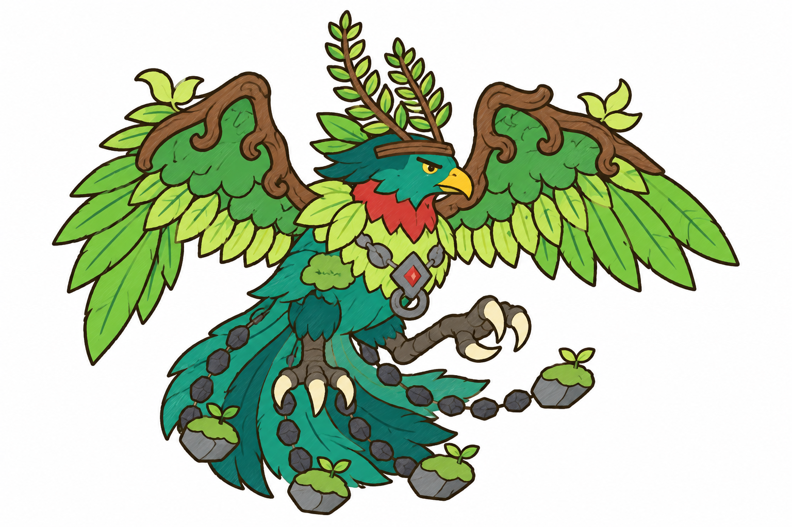

C · linh điểu trắng
lông trắng kem, mũ lục xám, cành cánh nở hoa hồng, mỏ chân cam; mào quạt lá

lông lục lam, ngực đỏ, lá vàng chanh, đá bazan; mào hai tàu dương xỉ

lông trắng kem, mũ lục xám, cành cánh nở hoa hồng, mỏ chân cam; mào quạt lá